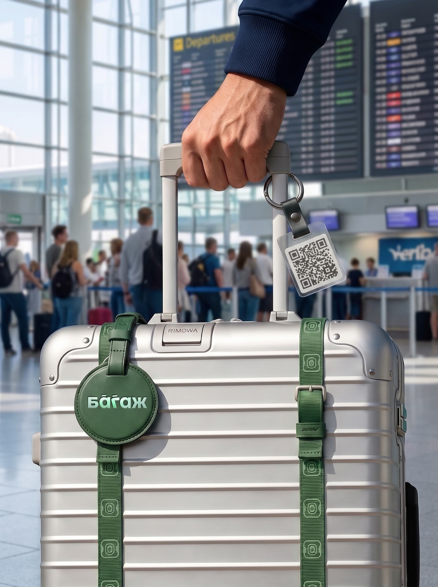
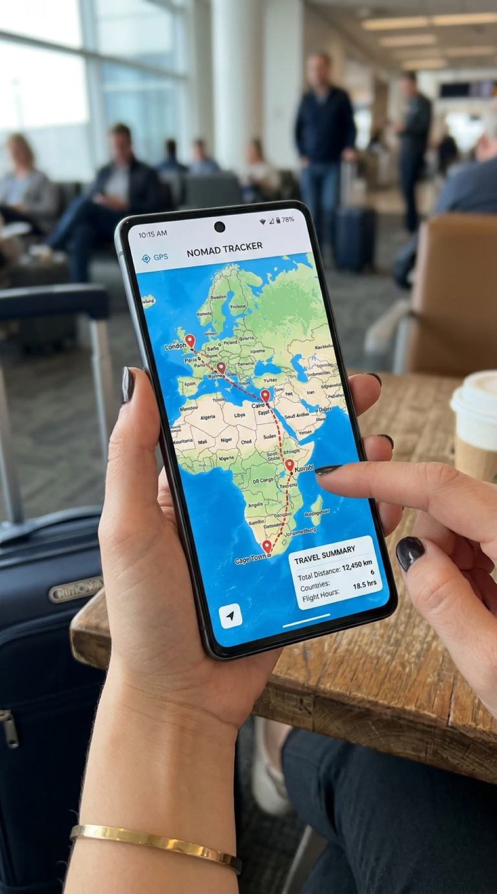
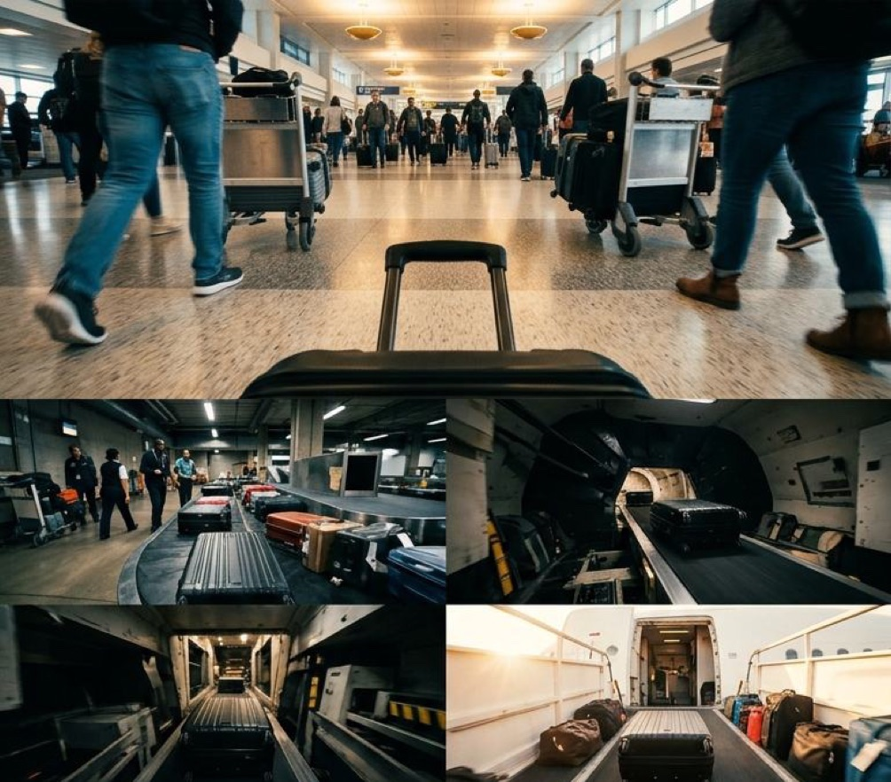
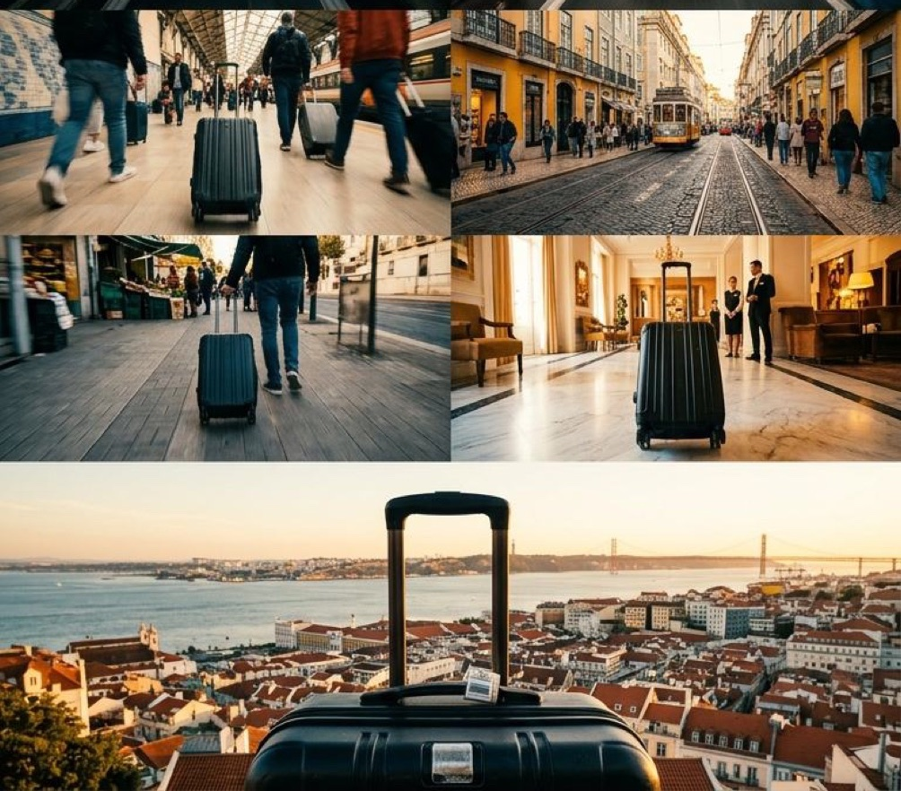

История чемодана
Специальный проект · Продюсирование

О проекте
BagStory — сервис, который превращает чемодан в хроникёра путешествий. С помощью небольшого брелока-трекера, QR-кода и опциональной мини-камеры чемодан запоминает свой маршрут: километраж, страны, перелёты. В мобильном приложении эти данные превращаются в интерактивную карту, статистику и короткие истории от лица чемодана — текстовые и в формате мини-фильмов.
Задача
Запустить новый формат эмоционального маркетинга в туристической отрасли, усилить лояльность аудитории и собрать уникальный пользовательский контент, работающий на узнаваемость бренда.
Главный вызов
Чемодан — функциональный товар, о котором не рассказывают. Нужно было найти механику, которая превращает покупку в повод для истории и возвращает клиента к бренду между поездками.
Бренд



Результат
Сформирован новый формат эмоционального маркетинга в туристической отрасли: бренд получает поток пользовательского контента, а клиент — повод возвращаться к продукту между путешествиями.
Решение
Мы отдали голос самому предмету. Трекер и QR-код собирают маршрут, а приложение превращает сухие данные в повествование от первого лица — чемодан рассказывает, где побывал, сколько километров прошёл и что видел. Так функциональная покупка становится носителем личной истории владельца.
Объём работ
- Продюсирование спецпроекта
- Бренд компании
- Цифровой продукт
- Эмоциональный маркетинг